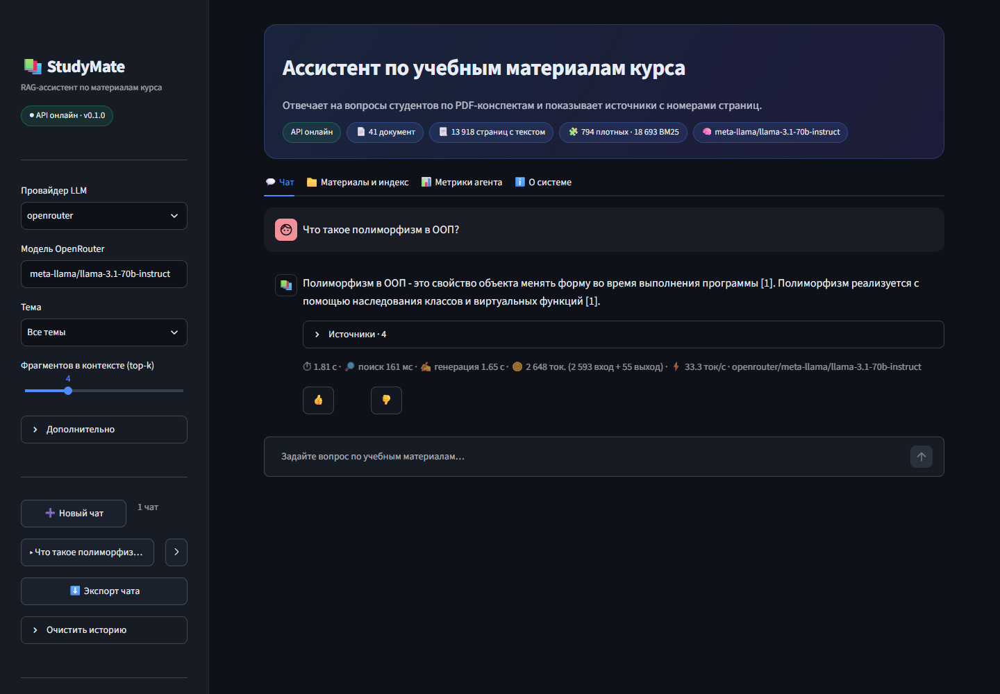
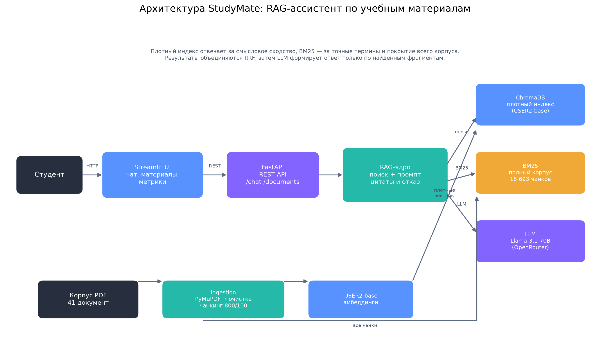
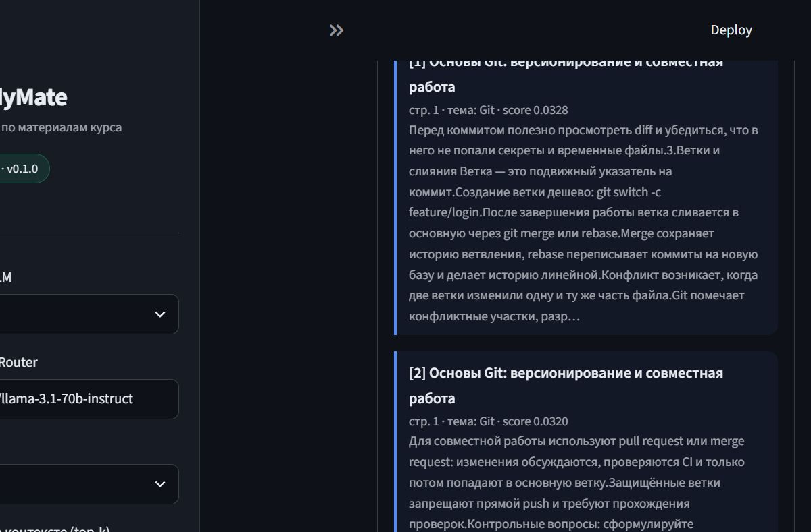
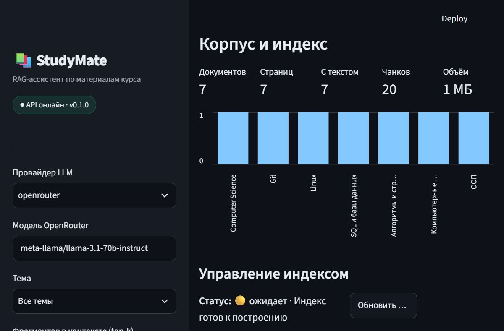
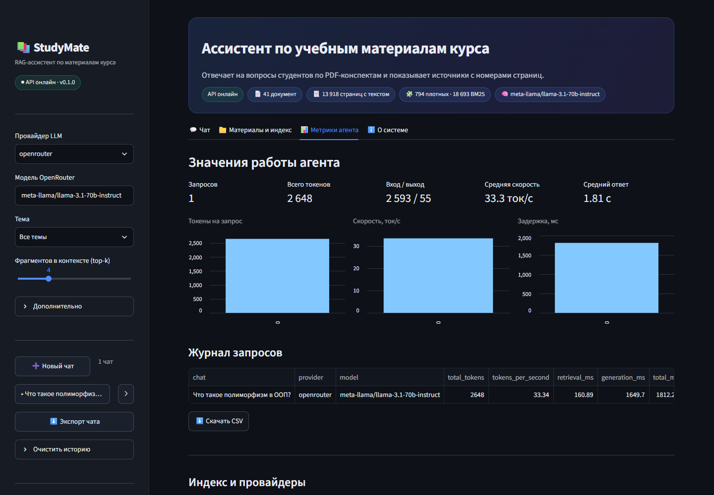
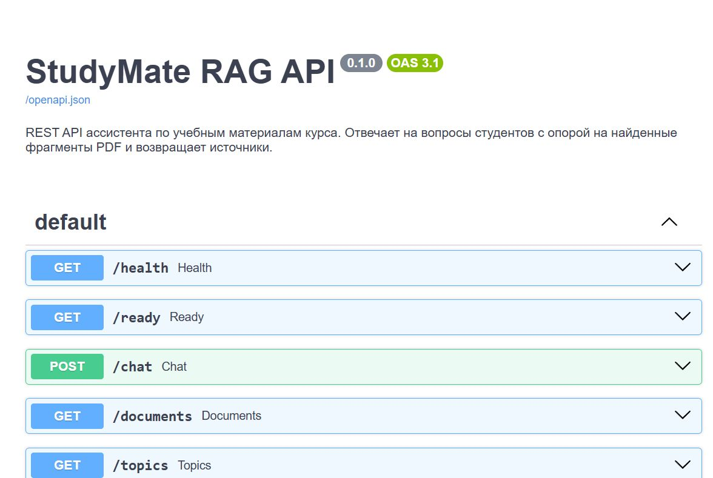

🔎
Гибридный поиск
Плотный индекс ChromaDB на USER2-base и BM25 по всему корпусу, объединение через RRF и MMR.
RAG-система отвечает на вопросы студентов по PDF-конспектам, опирается только на найденные фрагменты и показывает источники с номерами страниц.

Не «чат-бот обо всём», а ассистент, который держится материалов курса.
Плотный индекс ChromaDB на USER2-base и BM25 по всему корпусу, объединение через RRF и MMR.
Цитаты [1], карточки источников, документ, страница и оценка релевантности.
Если в материалах нет ответа, система говорит об этом вместо галлюцинации.
Список документов, загрузка PDF, запуск и отмена индексации, удаление, прогресс в реальном времени.
Токены входа и выхода, токены в секунду, задержки поиска и генерации, журнал запросов.
Несколько диалогов, автозаголовки, экспорт в Markdown и сохранение между перезапусками.
Корпус проходит извлечение и очистку, нарезается на чанки по 800 токенов и индексируется двумя способами: плотные векторы USER2-base в ChromaDB и BM25 по всем чанкам.
Вопрос ищется одновременно по двум индексам, результаты объединяются RRF. LLM получает только найденные фрагменты и обязана ссылаться на них. Если контекста нет — следует отказ.

Оценка на отложенной тестовой выборке из 30 вопросов, судья — Llama-3.1-70B.
Baseline — та же LLM без поиска по документам. Он отвечает «по памяти» и не может подтвердить утверждения.
| Метрика | RAG | LLM без поиска |
|---|---|---|
| Faithfulness | 0.885 | — |
| Answer Relevancy | 0.807 | 0.858 |
| Answer Correctness | 0.517 | 0.447 |
Чат, материалы, документы и метрики — в одном Streamlit-приложении.




Нужен только Docker и ключ OpenRouter. Демонстрационный корпус уже внутри.
cp .env.example .env
# OPENROUTER_API_KEY=...
docker compose up --buildUI: localhost:8501 · API: localhost:8000/docs